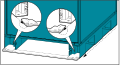

Install the Seismic Anchoring (Option) Reality NAM UPS with transformer 75–100 kVA Note: Anchoring bolts are not supplied. Use appropriate hardware for the floor type. Make anchoring holes in the floor. Install the rear seismic anchoring bracket(s) on the floor. Figure 1. Front View Push the cabinet(s) into position against the rear seismic anchoring brackets. Figure 2. Rear View  Save the front seismic anchoring brackets – they will be installed in Final Installation Steps.